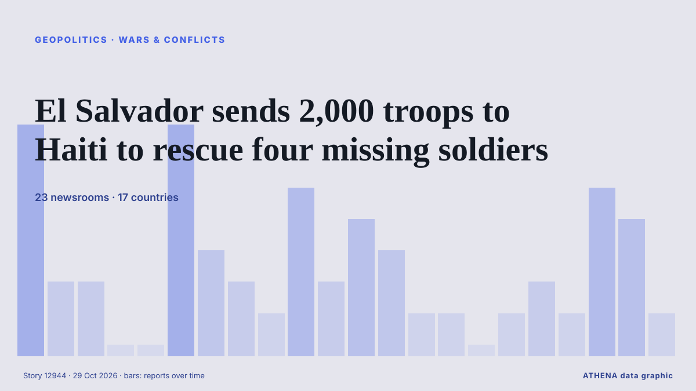

El Salvador sends 2,000 troops to Haiti to rescue four missing soldiers

A U.N.-backed force sent to combat gang violence said it was looking for the soldiers, who were in a gang-controlled area when they were attacked. из The New York Times (World)
Независимые источники: 23 издания в 17 странах, с 19 окт.; первым сообщил The New York Times (World); освещение идёт на спад. ATHENA оценивает риск как повышенный (5.4/10), прежде всего из-за тяжести описываемого ущерба и географического и отраслевого охвата. Уверенность — 92 % (высокая); подтверждают независимые источники: 23 издания, средняя надёжность источников — 79 %. СМИ по странам: Соединенные Штаты (10), Бразилия (5), Белиз (4). Освещение: с 19 окт. по 26 окт., 175 ч.
Почему это важно: События в сфере безопасности и дипломатии могут менять союзы, торговлю и рынки далеко за пределами непосредственно затронутых стран.
Что изменилось: 10 новых сообщений от 9 редакций за 24 часа до 29 окт..
Первый заголовок: Four soldiers from UN-backed force missing after gang attack in Haiti
Заголовки приводятся на английском языке, как они были опубликованы.
Коротко в цифрах
Отобрано, оценено и написано по опубликованной методологии ATHENA. Ни один редактор не вмешивается в отдельные события. Как это создаётся ›
| 19 Oct 06:43 UTC | 7 |
|---|---|
| 19 Oct 18:43 UTC | 2 |
| 20 Oct 06:43 UTC | 2 |
| 20 Oct 18:43 UTC | 0 |
| 21 Oct 06:43 UTC | 0 |
| 21 Oct 18:43 UTC | 7 |
| 22 Oct 06:43 UTC | 3 |
| 22 Oct 18:43 UTC | 2 |
| 23 Oct 06:43 UTC | 1 |
| 23 Oct 18:43 UTC | 5 |
| 24 Oct 06:43 UTC | 2 |
| 24 Oct 18:43 UTC | 4 |
| 25 Oct 06:43 UTC | 3 |
| 25 Oct 18:43 UTC | 1 |
| 26 Oct 06:43 UTC | 1 |
| 26 Oct 18:43 UTC | 0 |
| 27 Oct 06:43 UTC | 1 |
| 27 Oct 18:43 UTC | 2 |
| 28 Oct 06:43 UTC | 1 |
| 28 Oct 18:43 UTC | 5 |
| 29 Oct 06:43 UTC | 4 |
| 29 Oct 18:43 UTC | 1 |
| 19 Oct 15:56 UTC | 4.3 |
|---|---|
| 19 Oct 19:23 UTC | 4.5 |
| 22 Oct 07:04 UTC | 5.6 |
| 29 Oct 22:46 UTC | 5.4 |
Откуда эти цифры
Значимость
Риск
Уверенность
Освещение — кто сообщил и когда
заголовок в оригинале · открывает источник- The New York Times (World) · Соединенные ШтатыFive Salvadoran Soldiers Missing in Haiti After Ambush
- ABC News (International) · Соединенные ШтатыGangs in Haiti target foreign troops in biggest attack since new force began operations
- The New York Times (World) · Соединенные ШтатыCan This International Force Stop Haiti’s Gangs?
- The Straits Times · СингапурFour Salvadoran air force members missing after gang ambush in Haiti
- Al Jazeera English · КатарSearch under way for four soldiers missing after gang attack in Haiti
- PBS NewsHour World · Соединенные ШтатыHaitian gangs target foreign troops in biggest attack since force began operations
- The Rio Times · БразилияSalvadoran Soldiers Missing in Haiti
- Arab News · Саудовская АравияFour Salvadoran air force members missing after gang ambush in Haiti
- Breaking Belize News · БелизInternational News: Search continues for 4 Salvadoran soldiers missing after gang ambush in Haiti
- Africanews (English) · AFRHaitian gangs target foreign troops in biggest attack on new force
- Sky News (World) · ВеликобританияFour soldiers from UN-backed force missing after gang attack in Haiti
- Dominican Today · Доминиканская РеспубликаSearch continues for four Salvadoran security personnel missing after Haiti gang attack
- The Straits Times · СингапурEl Salvador says Haiti gangs holding 4 force members hostage, announces new rescue mission
- Arab News · Саудовская АравияEl Salvador says Haiti gangs holding 4 force members hostage, announces new rescue mission
- CBC News · КанадаEl Salvador's president says military operation launched in Haiti to retrieve missing UN force members
- The New York Times (World) · Соединенные ШтатыEl Salvador’s President Issues Harsh Warning to Haitian Gangs After 4 Soldiers Are Abducted
- Euronews English · ФранцияEl Salvador launches military operation in Haiti to free four kidnapped aviation technicians
- Al Jazeera English · КатарEl Salvador’s Bukele threatens Haitian gangs over abducted soldiers
- NPR · Соединенные ШтатыBukele says military operation launched to rescue Salvadorans held by gangs in Haiti
- BBC News · ВеликобританияEl Salvador's president threatens Haitian gangs over military hostages
- Dominican Today · Доминиканская РеспубликаBukele warns Haitian gangs after four Salvadoran soldiers are kidnapped
- ABC News (International) · Соединенные ШтатыEl Salvador deploys special forces to Haiti to help find 4 missing soldiers who came under attack
- Breaking Belize News · БелизBukele deploys 100 special forces soldiers to Haiti after gangs kidnap four Salvadorans
- The New York Times (World) · Соединенные ШтатыAmbush of Salvadoran Soldiers Escalates Haiti’s Anti-Gang Mission
- The Rio Times · БразилияEl Salvador Troops Reach Haiti to Find 4
- Jamaica Observer · ЯмайкаEl Salvador sends troops to Haiti to find 4 missing soldiers
- Dominican Today · Доминиканская РеспубликаEl Salvador deploys 100 special forces to Haiti to rescue missing soldiers
- The Rio Times · БразилияWhat Is Happening in Haiti?
- Anadolu Agency (English) · ТурцияEl Salvador deploys special forces to Haiti to rescue kidnapped troops
- Breaking Belize News · БелизInternational News: El Salvador’s President on rescue mission in Haiti: “God will grant us victory”
- Jamaica Observer · ЯмайкаEl Salvador troops arrive in Haiti to search for missing colleagues
- The Rio Times · БразилияEl Salvador Expands Haiti Rescue Deployment
- The New York Times (World) · Соединенные ШтатыRemains Found in Haiti During Hunt for Missing Salvadoran Soldiers
- The Straits Times · СингапурBodies of ambushed Salvadoran soldiers found in Haiti, New York Times reports
- ABC News (International) · Соединенные ШтатыEl Salvador’s Bukele says bodies found in Haiti are not those of missing Salvadorans
- The Rio Times · БразилияEl Salvador Denies Haiti Bodies Are Its Men
- Anadolu Agency (English) · ТурцияEl Salvador's president denies report that bodies found in Haiti are missing Salvadoran soldiers
- BBC News · ВеликобританияEl Salvador president says bodies found in Haiti are not those of hostages
- The Tico Times · Коста-РикаBukele Says Remains Handed Over in Haiti Do Not Belong to Missing Salvadoran Technicians
- Breaking Belize News · БелизInternational News: Bukele says remains found in Haiti are not those of missing Salvadoran soldiers